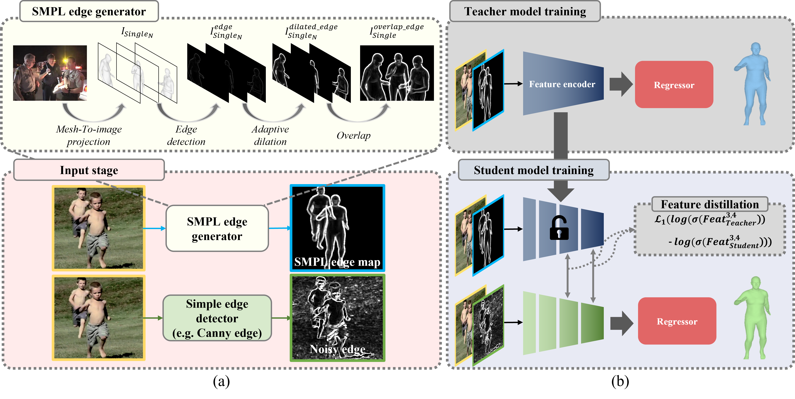

SMPL Edge Feature Distillatino (SEFD)
The figure below is the overall flow of our method. It consists of four components: Input Stage, SMPL Edge Generator, Teacher Model Training, and Student Model Training. To train the Teacher Model, an SMPL edge map must be generated through the SMPL Edge Generator in the Input Stage. After this process, the generated SMPL edge map is concatenated with the Input image and used to train the Teacher Model. After training the Teacher Model in this way, only the encoder of the Teacher Model is used to train the encoder of the Student Model through feature distillation. The input to the Student Model is obtained by passing it through a simple edge detector (e.g. Canny edge).
To elaborate further, the SMPL Edge Generator consists of Projection, Edge Detection, Adaptive Dilation, and Overlap. For the Loss in Feature Distillation,
we used the Log Softmax Loss that we found, and we connected the 3rd and 4th feature maps for Feature Connection.
An explanation of Adaptive Dilation is provided below, and the reason for selecting the Feature Connection number and Log Softmax Loss and the results are mentioned below.
We have added a GIF animation below just in case you have trouble understanding. Please check it out if you need further clarification.